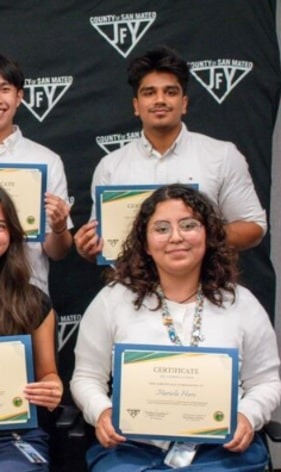
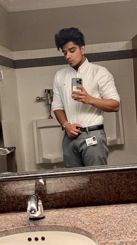
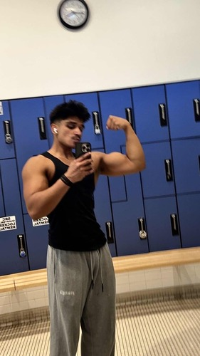

Ayush Agrawal
Ayush Agrawal is a dedicated student of Public Policy at the University of California, Riverside, with a strong academic record and an interest in constitutional law, civil rights, and political science. As a University Honors program member, he is looking to pursue law school upon receiving his Bachelor of Arts degree. Ayush has also demonstrated a commitment to academic excellence, landing on the Dean's List every quarter and the Chancellor's List his first year. His coursework is specifically geared towards social change, with concentrations in political theory, ethnic studies, policy analysis, ethics, and professionalism.
Apart from his studies, Ayush has gained significant practical experience by interning at the San Mateo County's Public Authority office, where he worked on projects that helped care providers and improved effective governance. Furthermore, he has built a varied portfolio of experience in services by volunteering with the Boys and Girls Club, volunteering with San Mateo County, taking part in tutoring programs, and participating in environmental restorations. These experiences have enabled him to connect policy ideas to real-world outcomes and have cemented his desire to advocate for the community.
Ayush is appreciated for his good work ethic and discipline, traits that are the foundation of his academic success and extracurricular life alike. He is technologically competent with skill sets including coding, advanced Excel, and a 140 words-per-minute typing speed. These credentials facilitate his efficient handling of research, data analysis, and written communication, which have been relevant in his academic, internship, and volunteer experiences.
In addition to his academic pursuits, Ayush is strongly devoted to self-development through physical fitness. He has been on a consistent regimen of weight training for over three years and has been training in boxing for over a year. His daily regimen has had a big impact on his mental approach to tackle all problems, cultivating an attitude characterized by endurance, discipline, and persistence that he utilizes in every area of his life.
Ayush is especially interested in the convergence of legal systems, ethical questions, and governance. His commitment to social justice and democratic principles animates both his scholarly interests and career aspirations. In advance of starting law school, he is eagerly pursuing opportunities that will allow him to hone his legal skills and policy interests—whether through internships, research initiatives, or grassroots activism.
Through his work with governmental agencies, his contribution to academic endeavors, and his mentoring by peers, Ayush Agrawal has shown a definite sense of direction along with a desire for service. He stands ready to contribute positively to the arenas of law and public policy and is keenly interested in furthering his search for knowledge, development, and the promotion of beneficial change.
Experience
Summer Intern
• 20-25 hours a week of in office work
• Conducted legal research to support public assistance programs, improving policy implementation for underserved populations
• Assisted in presentations given to providers
• Completed, converted and uploaded physical documents to the online systemp
Auxillary Staff
• Helping at-risk youth in the area with their homework and other school work
• Leading warmups and conditioning
• Leading boxing drills to teach correct form and footwork
Summer Intern
• Worked with 7th- 8 th grade students from under-served communities to provide support with:
• 1-1 or Small Group Academic Subject Tutoring
• Art Enrichment Support
• Computer Science and other STEM Enrichment Support
• Literacy/Reading Support
Education
Carlmont Highschool
University of California Riverside
Portfolio

.jpg)




